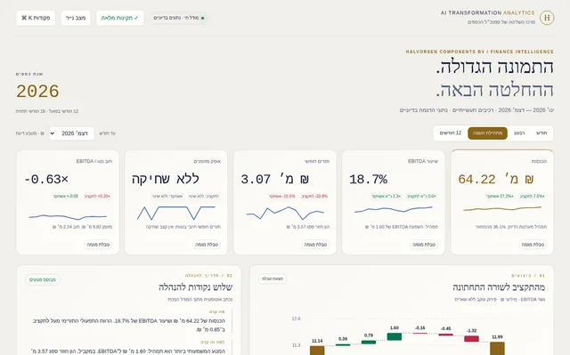

ויזואליזציית קוד
קלוד הופך הסבר קוד מורכב לעמוד HTML אינטראקטיבי עם תרשימים, במקום פסקת טקסט ארוכה.
מה זה עושה
כשקלוד עומד להסביר אלגוריתם עם כמה שלבים, ארכיטקטורת מערכת, זרימת דיבאג עם שינויי מצב, או ביקורת קוד - הוא בונה עמוד HTML עצמאי עם הדגשת תחביר, תרשימי Mermaid והליכה שלב-אחר-שלב, במקום רק לכתוב טקסט.
העמוד עובד אופליין בלחיצה כפולה, בעל עיצוב כהה (Dracula) ברירת מחדל עם אפשרות בהיר, וניווט במקלדת (חצים לשלבים, F למסך מלא). יש שישה תבניות מוכנות: הליכת אלגוריתם, סקירת ארכיטקטורה, ביקורת קוד, זרימת דיבאג, זרימת נתונים, ומצגת שקפים.
לניתוח ברמת repo שלם (קשרים בין קבצים, מפת תלויות) הסקיל יכול גם לפתוח כלי חיצוני ל-GitHub בשם Rift Code בדפדפן, בנוסף להסברי HTML נקודתיים.
מתי זה שימושי
- מסבירים אלגוריתם או פונקציה מורכבת ורוצים שהמשתמש יראה את זה ויזואלית, לא רק יקרא
- עושים code review ורוצים הערות עם רמת חומרה מסומנת ויזואלית לצד הקוד
- מדבגים בעיה עם כמה שינויי מצב ורוצים להראות את הזרימה שלב-אחר-שלב
- צריך להציג ארכיטקטורת מערכת עם כמה רכיבים למישהו שלא קורא קוד
מה אומרים לקלוד
אין פקודות ללמוד. אחרי ההתקנה פשוט כותבים לקלוד משפט כמו:
- "תראה לי את זה ויזואלית"
- "הסבר קוד עם תרשים"
- "תעשה לי ויזואליזציה של האלגוריתם הזה"
- "איך זה עובד? תראה לי גרפית"
דוגמה
מה נותנים
מה מקבלים
מה צריך שיהיה מותקן
| מה | למה / הערה |
|---|---|
| דפדפן | לפתיחת קובצי ה-HTML שנוצרים; שימוש ב-Rift Code דורש חשבון GitHub לאימות |
לתשומת לבך: כשמבקשים תרשים עצמאי בלי הקשר קוד (למשל דיאגרמת זרימת עסקים), עדיף כלי ייעודי לדיאגרמות - זה נועד ספציפית להסברי קוד.
התקנה בהדבקה אחת
פותחים את Claude Code, מדביקים את הבלוק הבא, והוא מתקין הכול לבד:
הי קלוד! התקן לי בבקשה את הסקיל "ויזואליזציית קוד" (code-visualizer). 1. זהה את מערכת ההפעלה שלי ואת התיקייה ~/.claude/skills/ (ב-Windows: C:\Users\<user>\.claude\skills\). צור אותה אם אינה קיימת. 2. הורד את החבילה: https://ronenamos-arch.github.io/claude-skills/dl/code-visualizer.tar.gz 3. חלץ ממנה את התיקייה skills/code-visualizer אל ~/.claude/skills/code-visualizer. אם כבר קיים סקיל בשם הזה - שאל אותי לפני שאתה דורס. 4. בדוק אם מותקנים אצלי: דפדפן. אם חסר משהו - תגיד לי בדיוק מה להתקין ותציע להתקין בעצמך. 5. הסבר לי בקצרה איך מפעילים - למשל שאני פשוט אומר: "תראה לי את זה ויזואלית".
מעדיף טרמינל? (Git Bash / Mac / Linux)
curl -fsSL https://ronenamos-arch.github.io/claude-skills/install.sh | bash -s -- code-visualizer
או הורדה ידנית של החבילה וחילוץ אל ~/.claude/skills/.
מתנות מרונן
משאבים חינמיים להורדה
מתנות דיגיטליות מהחנות של רונן ב-Gumroad: לוחצים, משאירים מייל והקובץ אצלכם. בלי תשלום, בלי מנוי.
-
 חינם
25 Gemini Skills ומדריך יישומי
25 סקילים מוכנים להורדה ושימוש מיידי עם Google Gemini: אוטומציות, סוכנים, ניתוח דאטה ופרודוקטיביות.
הורדה חינמית מיידית ←
חינם
25 Gemini Skills ומדריך יישומי
25 סקילים מוכנים להורדה ושימוש מיידי עם Google Gemini: אוטומציות, סוכנים, ניתוח דאטה ופרודוקטיביות.
הורדה חינמית מיידית ←
-

חינם דשבורד CFO אינטראקטיבי מרכז שליטה פיננסי חי שנבנה ב-Claude: תזרים 13 שבועות, תרחישי מה-אם עם סליידרים והפרומפט המלא. הורדה חינמית מיידית ← - חינם 50 הנחיות Copilot לפיננסים פרומפטים מוכנים ל-Excel, Outlook, Word, PowerPoint ו-Teams - אוטומציה של משימות כספים שגרתיות. הורדה חינמית מיידית ←
-
 חינם
זרימות עבודה מבוססות פרויקטים ב-ChatGPT
100 דרכים מעשיות לניסוי ויישום ב-ChatGPT: זרימות עבודה שלמות, ניתוח נתונים, אוטומציה ובקרה עסקית.
הורדה חינמית מיידית ←
חינם
זרימות עבודה מבוססות פרויקטים ב-ChatGPT
100 דרכים מעשיות לניסוי ויישום ב-ChatGPT: זרימות עבודה שלמות, ניתוח נתונים, אוטומציה ובקרה עסקית.
הורדה חינמית מיידית ←
-
 חינם
לבדוק AI כמו שבודקים אנליסט ג'וניור
המדריך הפרקטי לביקורת תוצרי AI בכספים: גילוי הזיות, בדיקות סבירות ופרוטוקול 4 העיניים.
הורדה חינמית מיידית ←
חינם
לבדוק AI כמו שבודקים אנליסט ג'וניור
המדריך הפרקטי לביקורת תוצרי AI בכספים: גילוי הזיות, בדיקות סבירות ופרוטוקול 4 העיניים.
הורדה חינמית מיידית ←
הכשרה מעשית
הקורסים של רונן
רוצים ללכת עד הסוף? שני הקורסים המעשיים של רונן עמוס, רו"ח.
-
 קורס
קורס קלוד AI MASTER
קורס AI לרואי חשבון ומנהלי כספים: שליטה מלאה ב-Claude לאוטומציה של מחלקת הכספים, מסגירת חודש מהירה ועד דשבורדים לדירקטוריון.
קורס
קורס קלוד AI MASTER
קורס AI לרואי חשבון ומנהלי כספים: שליטה מלאה ב-Claude לאוטומציה של מחלקת הכספים, מסגירת חודש מהירה ועד דשבורדים לדירקטוריון.
- 16 מודולים מעשיים
- 200+ פרומפטים פיננסיים
- ספריית Skills להורדה
-
 קורס
Microsoft 365 Copilot Masterclass
קורס Copilot לכספים: מאפס ידע ועד סוכני כספים אוטונומיים. ההכשרה המעשית שנבנתה על ידי רואה חשבון, ללא צורך בידע בקוד.
קורס
Microsoft 365 Copilot Masterclass
קורס Copilot לכספים: מאפס ידע ועד סוכני כספים אוטונומיים. ההכשרה המעשית שנבנתה על ידי רואה חשבון, ללא צורך בידע בקוד.
- 8 מודולים ממוקדים
- 10+ שעות תוכן ותרגול
- 4 מעבדות אקסל להורדה